Deep Learning-Based Reduced Order Modeling
of Fluid Flow in 2D Bearing Cavity
State Key Laboratory of Tribology in Advanced Equipment and the Friction Forum 2025
November 6, 2025 at Tsinghua University in Beijing
Koji Kususaki*, Takashi Noda*, *NSK Ltd.
Contact: kususaki@nsk.com
Hello, I am Koji from NSK, and I will present
"Deep Learning-Based Reduced Order Modeling of Fluid Flow in 2D Bearing Cavity".
We are honored to be invited to the Friction Forum 2025. We would like to share the AI applications our company
has been working on, but they are still at an early stage. Please bear with me. Thank you.
---
What is NSK?
First, let me introduce NSK.
What is NSK?
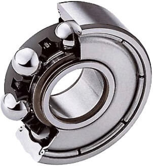
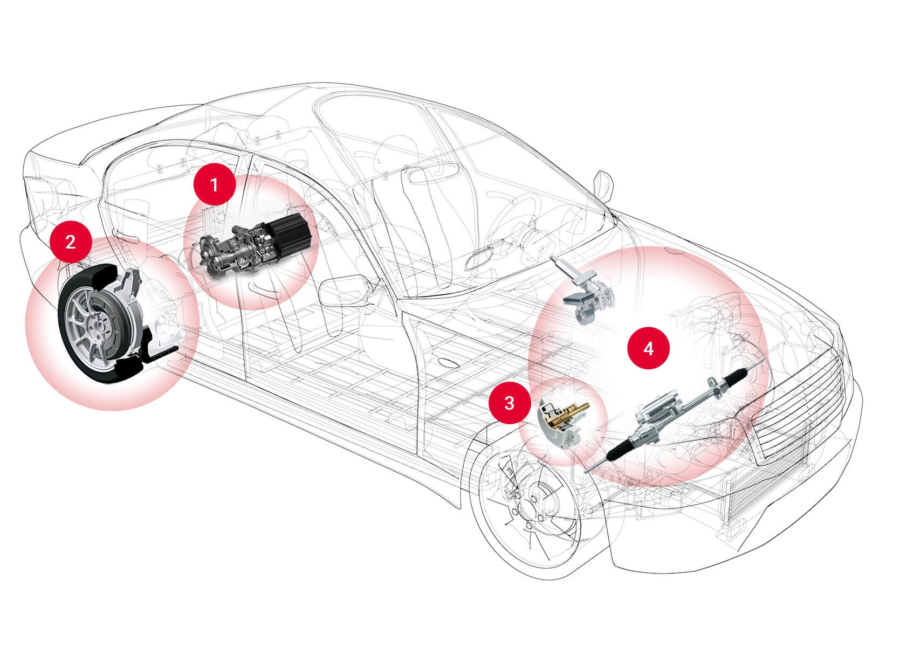
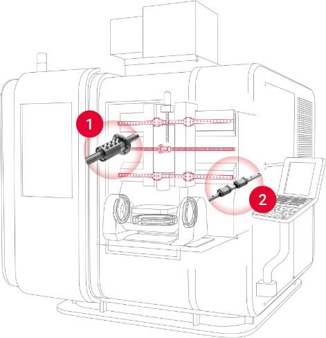
NSK was founded in 1916 and has over 100 years of history.
We are a global company that manufactures and sells bearings and precision machinery components.
Our products are used in various industries such as automotive, industrial machinery, and aerospace.
What is NSK?
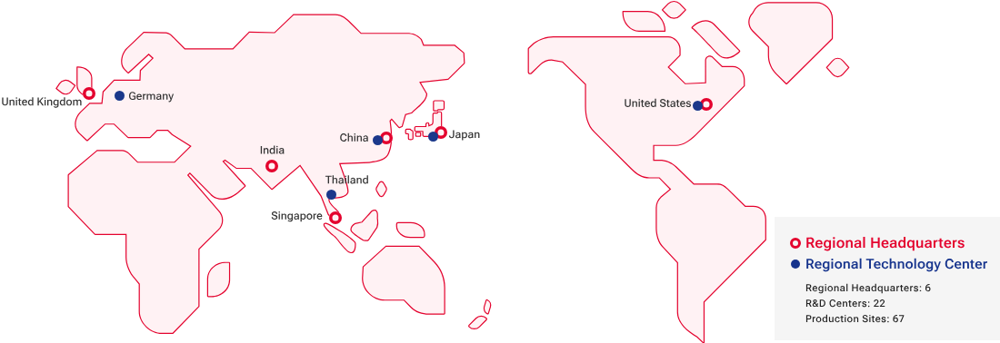
We are committed to providing high-quality products and services to our customers worldwide.
---
Agenda
CFD and AI
DL-ROM
Evaluation and Learning Model
Results
Achievements and Future Prospects
This is the agenda for today's presentation.
First, I will briefly explain the relationship between CFD and AI.
Next, I will describe the DL-ROM method used in this study.
After that, I will explain the evaluation and learning model, and finally discuss the results and achievements
along with future prospects.
---
CFD and AI
Now, let me explain the relationship between CFD and AI.
CFD and AI
Application of CFD Analysis in Bearings
✔︎ Desktop examination possible ✖︎ High computational cost (day~week / 1s)
In bearings, we use CFD analysis to help us design better products because it helps us visualize how fluids
move. This is an example of CFD analysis of fluid inside bearings that our company has done before. As you can
see, we can visualize where grease distributes, and we can also study things that are hard to visualize, like
heat from friction and how that makes the viscosity decrease.
CFD and AI
Reducing CFD computational cost using AI
BASIC IDEA: Learn CFD results with AI to replace CFD
So, people have started looking for ways to use AI to make CFD calculations faster and cheaper. Here's the basic
idea: we run expensive CFD calculations first and use those results to teach AI. Then the AI can work like a
replacement for CFD. This can make CFD calculations much faster. The AI can predict the same things as CFD but
in much less time.
CFD and AI
Reducing CFD computational cost using AI
Pant P, et al. Deep learning for reduced order modelling and efficient temporal
evolution
of fluid simulations. Phys Fluids. 2021; 33(10):107101.
Learning fluid motion patterns and creating substitutes for governing equations
For example, let me explain using the DL-ROM that I used in this study. This is a method that uses deep learning
to learn how fluids move and create replacements for the equations that control fluid flow.
The upper left shows the input fluid state, and the upper right shows the output of the next time step's fluid
state predicted by DL-ROM.
The lower part shows how the deep learning model is built, which uses convolutional neural networks to make
fluid states smaller and bigger again.
CFD and AI
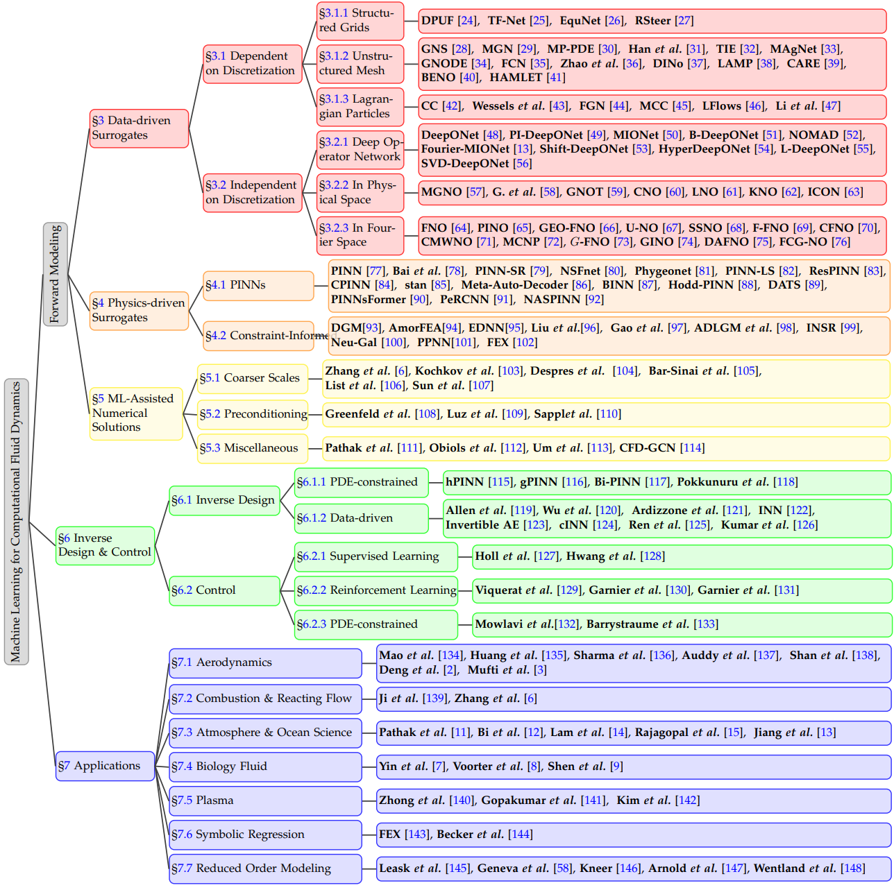
Haixin Wang, et al. Recent Advances on Machine Learning for Computational Fluid
Dynamics: A Survey. arXiv:2408.12171 [cs.LG], 2024.
Besides the DL-ROM introduced today, there are various types of AI applications to CFD
As shown in this picture, there are many different ways to use AI to make CFD calculations faster and cheaper.
This picture comes from a review paper that was just published about using AI with CFD. The DL-ROM method I'm
showing you today is what they call "Reduced Order Modeling" at the bottom of this picture. This review paper
was written by researchers from China, and it's really clear and well-written,
so if you're interested in this topic, I definitely recommend checking it out.
---
DL-ROM
Next, let me explain DL-ROM.
DL-ROM
D eep L earning for R educed O rder M odelling
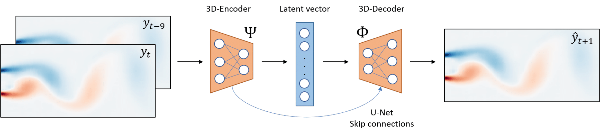
Creating reduced-order models using deep learning
Pant P, et al. Deep learning for reduced order modelling and efficient temporal
evolution of fluid simulations. Phys Fluids. 2021; 33(10):107101.
DL-ROM stands for Deep Learning for Reduced Order Modelling, and is a method for creating reduced-order models
using deep learning. As shown in this figure, DL-ROM has three main parts. First, there is an encoder that makes
the fluid state smaller. Next, there is a part that moves the smaller state forward in time. Finally, there is a
decoder that makes the time-moved state big again. By putting these three parts together, DL-ROM can predict
fluid states quickly and well.
DL-ROM
Data: 3D grid with 2D space + 1D time
Feature: Time evolution calculation
Constraints: Fixed grid number
Rectangular data shape
Values exist inside boundaries
1. The data that DL-ROM works with is like a 3D grid - it has 2D space plus time as the third dimension.
DL-ROM
Input is 10 fluid snapshots
→ shape=(320×80×10)
→ compressed to vector with shape=(32)
→ expanded to shape=(320×80×1)
→ outputs 1 fluid snapshot
Let me explain in more detail using specific numbers.
DL-ROM
Specific network architecture
(Convolution・Normalization・Activation) × 5 → (Transposed convolution・Normalization・Activation)
× 5
Now let me show you the specific network design of DL-ROM. The encoder consists of 5 convolutional layers, batch
normalization layers, and activation layers. This compresses input data and generates low-dimensional
feature vectors. On the other hand, the decoder consists of 5 transposed convolutional layers, batch
normalization layers, and activation layers. This expands feature vectors back to their original shape
and predicts fluid states at the next time step.
Textbooks often say a convolution matrix is a discrete form of a convolution integral.
That means it can represent differential operators.
So a well-designed convolutional model can learn the flow dynamics.
---
Evaluation and Learning Model
To be honest, all the explanation so far has been about existing research, and the original part of this study
starts from here. Next, let me explain the evaluation and learning model.
Evaluation and Learning Model
We targeted planar annular fluid simulating bearings. Calculations were performed using commercial CFD.
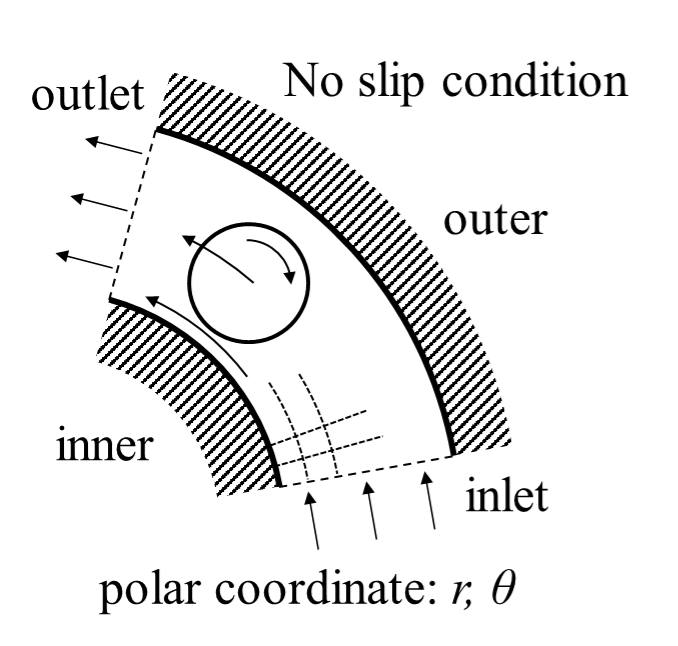
In this study, we looked at fluid flow in 2D bearing cavities. As you can see in this figure, we studied fluid
that flows in a ring shape, just like cut ball bearings in 2D. We used commercial CFD software to
calculate. The left animation shows how the fluid behaves according to CFD calculations, and the right
figure shows the boundaries of our calculation area.
Evaluation and Learning Model
Fluid: Single-phase Newtonian fluid
Reynolds number Re: 400
Output vorticity from commercial CFD
Interior boundaries filled with zeros
Rotating coordinate system (fixed ball position)
Cylindrical shape → rectangular data using polar coordinates
Let me explain the data preprocessing.
Evaluation and Learning Model
Training and test data split
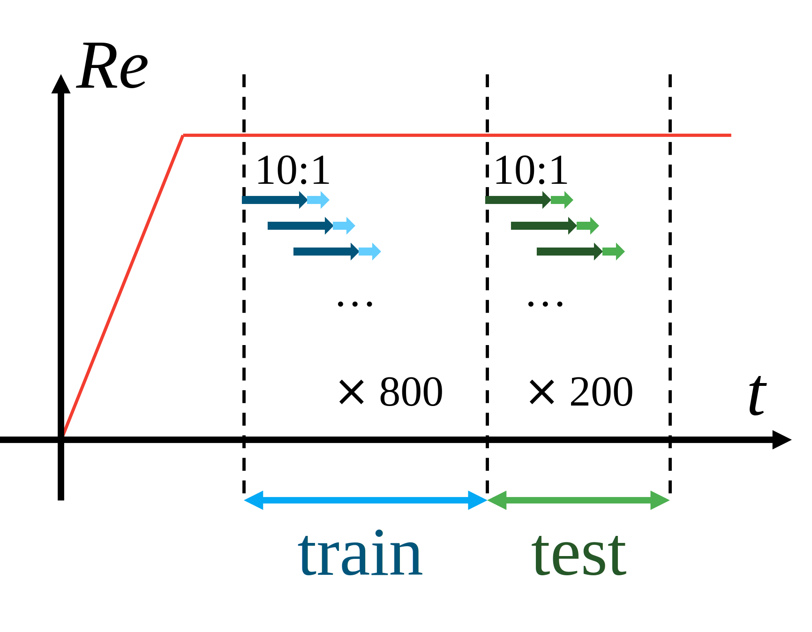
800 out of 1000 snapshots for training, 200 for evaluation
DL-ROM predicts 11th snapshot from 10 inputs
In training, DL-ROM learns to match predictions
In testing, we evaluate how well DL-ROM predictions match
Evaluation metric: Mean Squared Error
$$\text{MSE} = \frac{1}{\text{Var}(\Omega_{\text{CFD},i})}
\frac{1}{N}
\sum_{i=1}^{N} (\Omega_{\text{CFD},i} - {\Omega}_{pred,i})^2$$
Here we explain how we split the data and how we trained and tested the model.
Evaluation and Learning Model
Training results
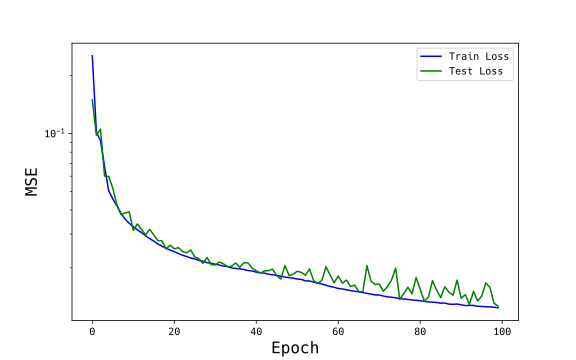
CPU: Intel(R) Xeon(R) CPU E5-2643 v4 @ 3.40GHz
This shows the training results. The right graph shows how the error changes as we train the model.
The horizontal axis shows training epochs, and the vertical axis shows MSE. The blue line shows
error for training data, and the green line shows error for test data. We can see that the error for both
datasets goes down as training moves forward. This means that DL-ROM is getting better at predicting fluid
behavior. While the training data error decreases smoothly, the test data error goes up slightly in some parts.
This is a sign of overfitting, but since both errors end up at similar levels, we think serious overfitting
did not happen. We used GPU for training and testing. The computer specs are shown here.
The computer is similar to a higher-end desktop PC. It has a fast multi-core CPU, a common gaming GPU,
and enough RAM for training.
---
Results
Next, let me explain the results of fluid simulation by DL-ROM.
Results
Fluid simulation by DL-ROM
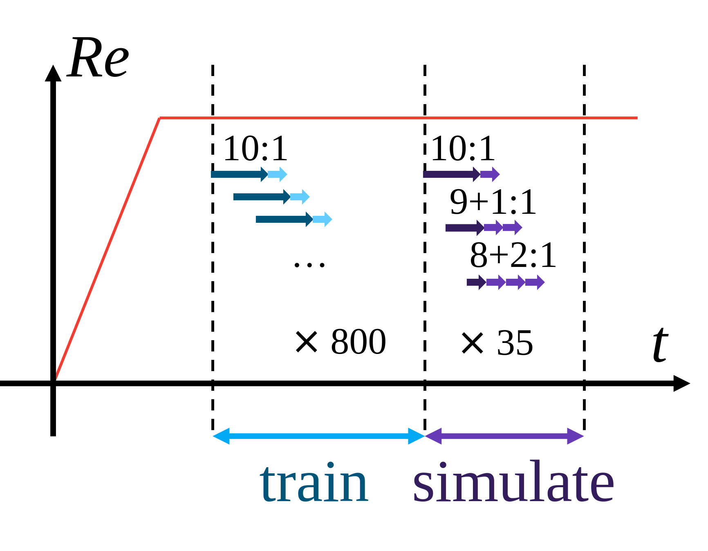
First 10 snapshots use test data
→ Predict 11th from 10 inputs
→ Add predicted 11th to input, predict 12th
→ From 21st onwards, use only DL-ROM predictions as input
→ Repeat this process to predict up to 35th
Here is how we did the fluid simulation using DL-ROM.
Results
Fluid simulation by DL-ROM
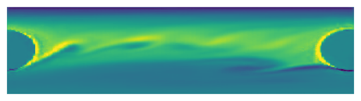
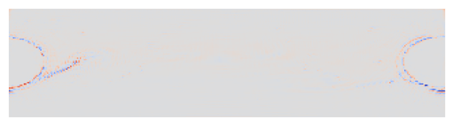
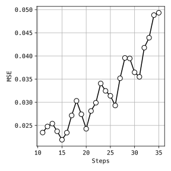
Achieved 260× speedup
This shows the results of fluid simulation by DL-ROM. The top row shows CFD results, the middle
row shows DL-ROM predictions, and the bottom row shows the differences between them. As you can see,
DL-ROM predictions match very well with CFD results. Looking at the differences at the bottom, we can
see that the differences are small in most areas.
---
Achievements and Future Prospects
Finally, let me discuss achievements and future prospects.
Achievements and Future Prospects
What was obtained in this study
Applied DL-ROM to 2D bearing fluid
Represented cylindrical space in polar coordinates
Used convolutional NN for images
Training evaluation conditions
Reynolds number Re: 400
Single-phase Newtonian fluid
Represented interior boundaries with zero-filling
Training results
Predicted next time step from CFD input
Achieved 260× speedup
Future prospects
Application to 3D bearing fluid
Non-Newtonian fluid and gas-liquid multiphase
Representation methods other than zero-filling for interior boundaries
Contact: kususaki@nsk.com due to
limited English proficiency.
Here is a summary of what we achieved. In this study, we successfully applied DL-ROM to 2D bearing fluid.
For future work, we have several exciting directions.


 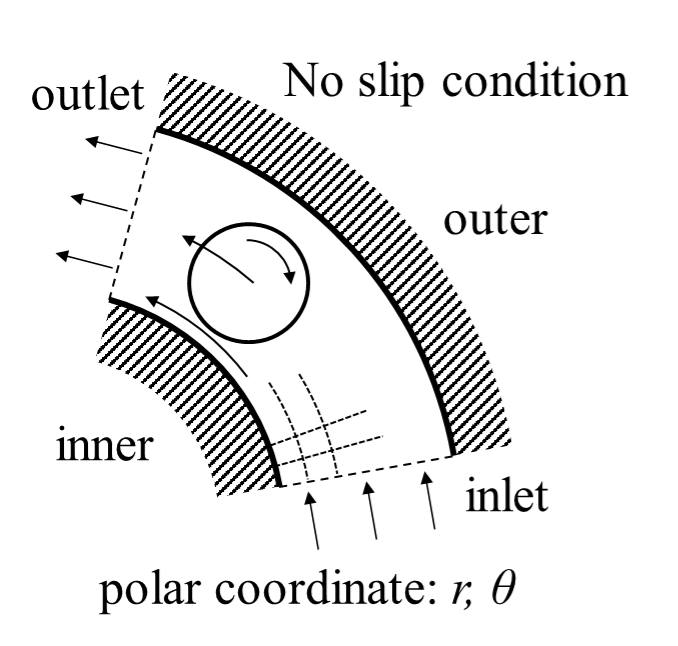
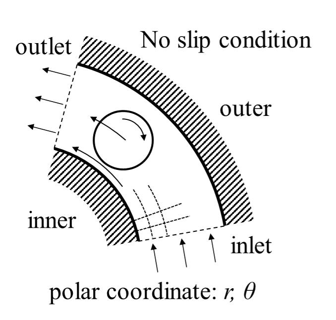

 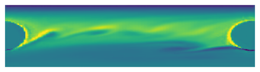
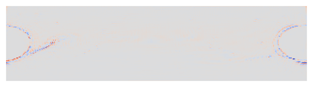
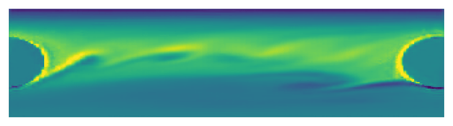
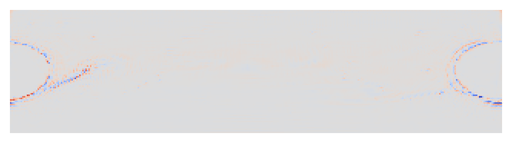